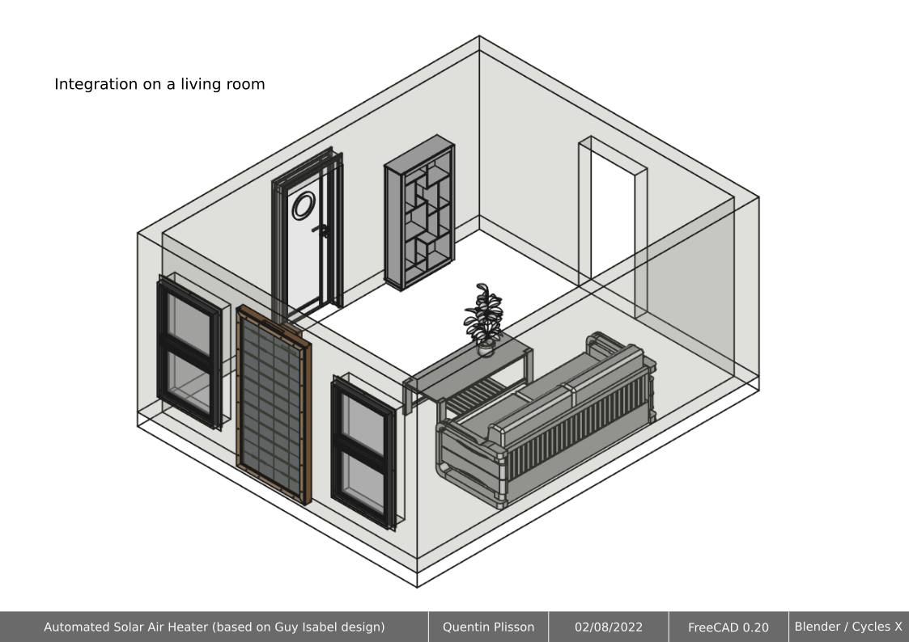

Capteur solaire thermique - Low-tech
Capteur solaire thermique - Low-tech#
Les plans présentés, ont été réalisés par Quentin Plisson.
Réchauffeur d’air à ardoise modélisé en FreeCAD à partir du livre “Les capteurs solaires à air” de Guy Isabel. J’ai simplement modifié le système de trappe automatique. Des infographies, réalisées avec Blender et Inkscape, permettent de comprendre son fonctionnement.
Avec les fichiers présents sur ce répertoire projet, vous pourrez être en mesure de :
Lancer des études thermiques et fluides
Modifier des paramètres selon vos spécificités
Générer des plans de fabrication adequats.
Pour commencer nous vous laissons prendre plus ample connaissance du projet : Capteur solaire thermique Low-tech
Vous pouvez télécharger le package
Modélisation 3Den tapant la commande Git suivante :
git clone https://github.com/Konsilion/SolarCAO.git
